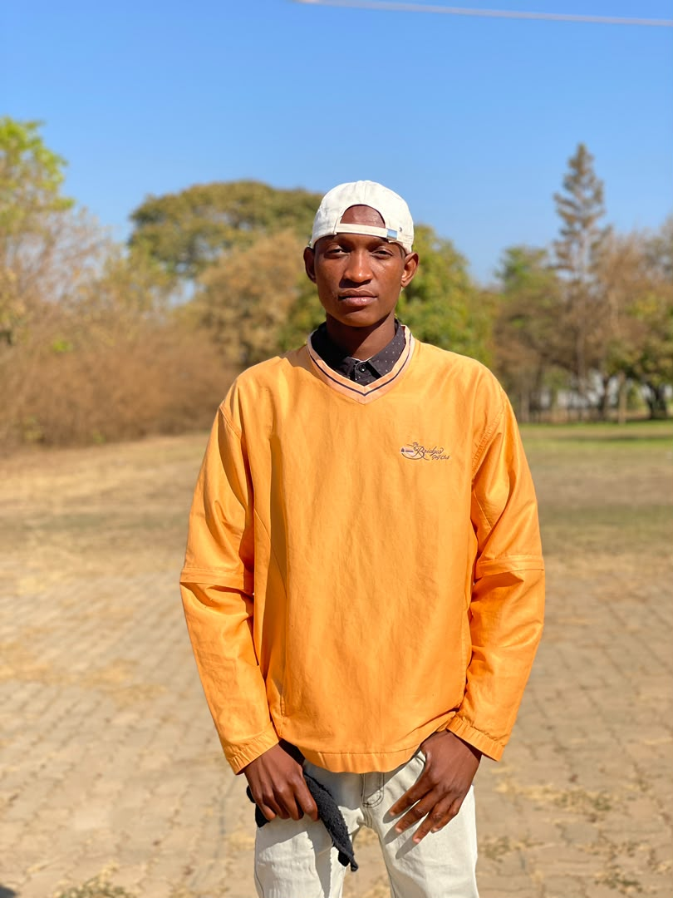

I am a student, studying the Bachelor of ICT with Education at Mulungushi University in Kabwe,
Zambia. I enjoy solving problems with code and I am learning how
websites are built from HTML and CSS. In my free time I like reading novels,
playing football and listening to music. This
website is my first complete project for ICT251, and I hope it shows
how much I have learned so far.
My Hobbies
I am a Footballer and a Chess player
Reading Novels
Listening Music
My Learning Plan
Steps to improve my web skills
Finish the HTML and CSS lessons and rebuild this page without
looking at my notes.
Build one small project every week, such as a recipe page or a
class timetable.
Learn Git and GitHub, then publish my projects online.
Weekly web learning timetable
My weekly web learning plan
Day
Topic
Practice task
Monday
Semantic HTML
Rebuild a page with header, nav, main and footer
Wednesday
CSS box model
Style cards using padding, margin and borders
Friday
Forms and media
Create a contact form and embed audio and video
Saturday
Git and GitHub
Commit and push this project to a repository
Projects and Skills
Three things I have learned and built. Search by a keyword such as "css" or "form", or open a card for more detail.
Semantic HTML page
I structured this portfolio with header, nav, main, section and footer so that it is clear for people and screen readers.
I learned why a page needs only one h1, how descriptive alt text helps visitors who cannot see the photos, and how labels connect to form fields.
Responsive layout with CSS
I used the box model, CSS Grid and a media query so that the page works well on both phones and computers.
I practised padding, margins and borders on purpose, made images and videos flexible, and checked that nothing scrolls sideways at 375 px.
Interactive features with JavaScript
I added form validation, a photo viewer, a project search and a light and dark theme switch.
I learned how to listen for events, change the page with the DOM, check user input and keep my logic in functions in js/script.js.
My Photos
Photo gallery

Photo 1: Studying with classmates in the computer lab.
Photo 1 of 3
Photo credit: all photos were taken by me, or by friends
who gave permission for them to be shown here.
My Media
Video: my self-introduction
A short video where I introduce myself, my programme and the web skill
I hope to learn.
Written summary: My name is SIAMPAKU SYDNEY and
I study Bachelor of ICT with Education at Mulungushi University. The web skill I most
want to learn is building responsive pages with HTML and CSS, so that
my websites work well on phones and computers.
Audio: why I study web technologies
In this clip I explain why I am studying web technologies and how I
hope to use these skills in my future career.
Contact
Browser demonstration only — no message is sent.
Validated preview
Your details were validated in the browser. Nothing was sent or stored.